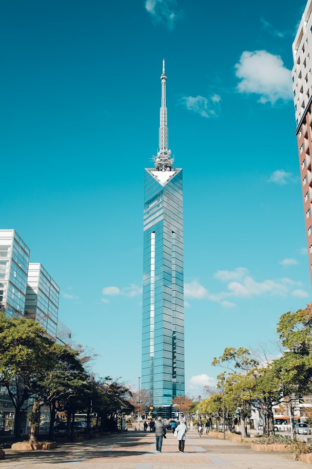
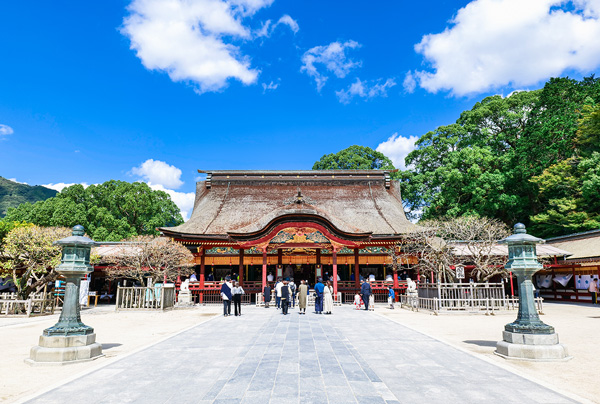
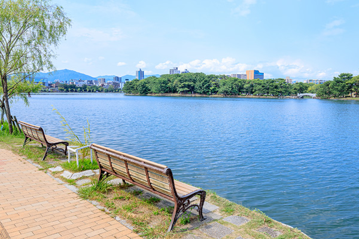
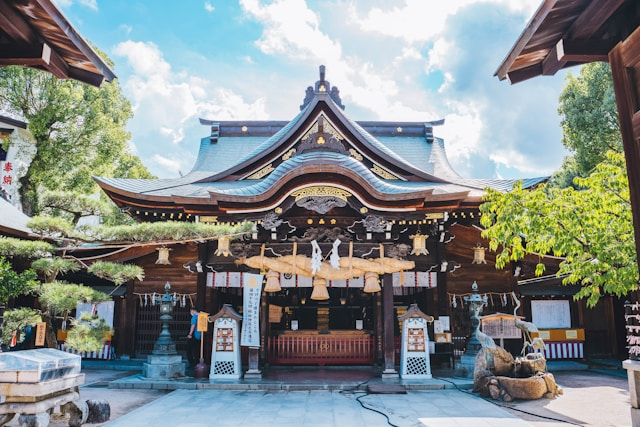
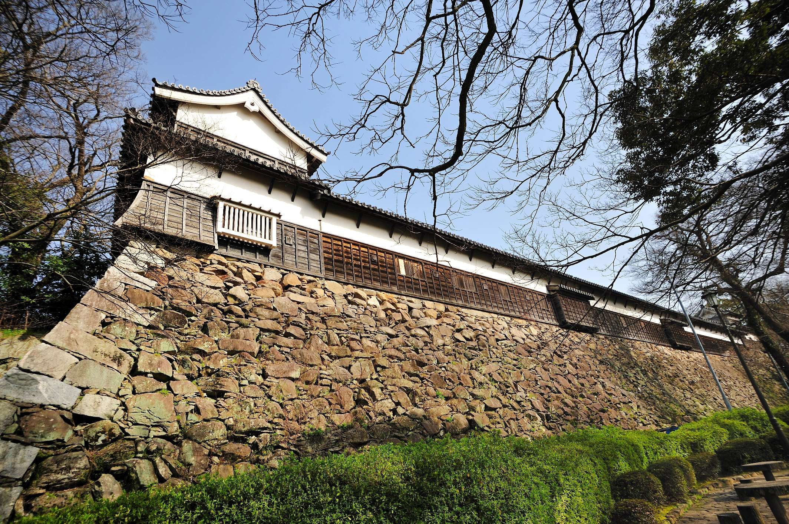

-
福岡タワー

全長234mを誇る日本一の海浜タワー。展望室からは福岡の街並みと博多湾を一望でき、夜には幻想的なイルミネーションが輝きます。デートや観光に人気のスポットです。
福岡市早良区百道浜2-3-26
地下鉄「西新駅」または「唐人町駅」からバス約10分／福岡タワー南口下車すぐ
-
太宰府天満宮

学問の神様・菅原道真公を祀る全国有数の神社。四季折々の自然に囲まれ、特に梅の名所として知られます。受験合格祈願の参拝客で年間を通して多くの人々が訪れます。
太宰府市宰府4丁目7-1
西鉄太宰府線「太宰府駅」から徒歩5分／博多駅から直行バスあり
-
大濠公園

福岡市中央区に位置する水と緑の公園。広大な池の周囲にはジョギングコースやカフェ、日本庭園が整備され、四季折々の風景を楽しみながら市民や観光客が憩う人気スポットです。
福岡市中央区大濠公園1-2
地下鉄「大濠公園駅」から徒歩2分／天神・博多からバス利用も便利
-
櫛田神社

博多の総鎮守として親しまれる古社で、博多祇園山笠の舞台としても有名。境内には歴史ある建物と巨大な飾り山があり、四季を通じて多くの参拝客が訪れます。
福岡市博多区上川端町1-41
地下鉄「祇園駅」から徒歩5分／博多駅から徒歩約15分
-
福岡城跡（舞鶴公園）

江戸時代に黒田長政が築いた福岡城の跡地。春には約1,000本の桜が咲き誇り、花見の名所としても人気です。歴史と自然が調和する市民の憩いのスポットです。
福岡市中央区城内1-4
地下鉄「大濠公園駅」または「赤坂駅」から徒歩8分
-
糸島エリア（桜井二見ヶ浦）
海辺に立つ白い夫婦岩と鳥居が人気の絶景スポット。青い海と夕日が美しく、カフェや雑貨店も点在。ドライブやフォトスポットとして観光客に人気です。
糸島市志摩桜井
JR筑肥線「筑前前原駅」から昭和バス「桜井」行き乗車、「夫婦岩前」下車すぐ